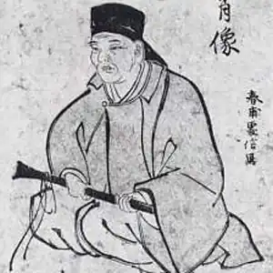

Кобаясі Ісса народився в 1763, с. Касівабара, пров. Сінано — 1827) — японський поет.
Ісса народився 1763 р. у гірській провінції Сінано в родині заможного селянина Кобаясі Яґохея. Його мати померла в молодому віці, а мачуха зробила все можливе, щоби майбутній поет уже в чотирнадцять років назавжди залишив сім'ю та поїхав шукати долі в Едо (Токіо). Перебравши там безліч професій, Ісса знайшов своє покликання в поезії.
Подорожуючи по країні, він заробляв на прожиток складанням хайку та викладанням поезії. Коли йому виповнилося 39 років, Ісса повернувся у рідне село, де застав тяжкохворого батька, котрого доглядав, поки той не помер у нього на руках. Зворушливе ставлення сина до свого батька, філософські роздуми поета про людське життя та навколишній світ відобразились у ліричному щоденнику Ісса "Останні дні батька" ("Тіті-но сю-ен-ніккі"), який він написав у 1801 р. Після численних судових розглядів і суперечок з мачухою та її дітьми поет отримав нарешті свою частку батьківського спадку і зміг уперше одружитися, коли йому було вже 50 років. Молода дружина народила йому чотирьох синів і доньку, але всі вони померли ще в дитячому віці. Незабаром померла й дружина поета Кіку, котру він палко кохав і за котрою сумував до самої смерті, хоч і був ще двічі одружений і навіть мав дітей. Окрім ліричного щоденника "Останні дні батька" (1801), творчий спадок Ісса складають літературні есе, дорожні нотатки, книга прози та віршів "Моя весна"("Ора-гахару", 1819), а також майже двадцять тисяч хайку. Поезія Ісса приваблює читачів своєю простотою, відвертістю і навіть якоюсь дитячою щирістю, за якими криються глибокі філософські погляди поета на життя, людську долю, місце та покликання людей у світі:Гусей осінніх настрій у душі. Що ж, прощавайте!Прощавайте, друзі!(Тут і далі пер. І. Бондаренка)Героями його віршів були не лише люди, а й різноманітні тварини, птахи, комахи:Мою хатинку,Равлику, пильнуй Укупі з соловейком голосистим.І цим його поезія певною мірою зближується з жанром байки, але без жодного моралізування, притаманного цьому жанрові. Можливо, саме тому Ісса, як ніхто інший із японських поетів, зміг так поетично, так образно та переконливо віддзеркалити у своїй поезії один із головних філософських постулатів дзен-буддизму — безумовну й органічну єдність усього живого та сущого на землі.